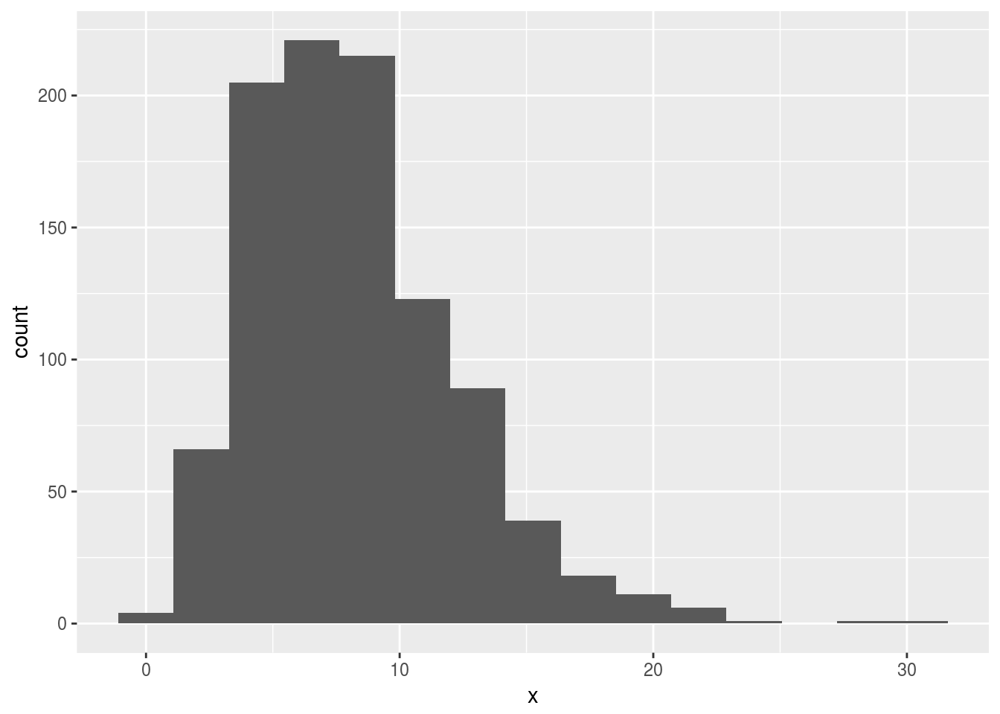

Simulation, the tidy way
Packages
I’m using this, and also doing some random number generation, which I’d like to be reproducible:
library(tidyverse)## ── Attaching packages ────────────────────────────────────────────────────────────────────────────────────── tidyverse 1.2.1 ──## ✔ ggplot2 2.2.1.9000 ✔ purrr 0.2.4
## ✔ tibble 1.4.2 ✔ dplyr 0.7.4
## ✔ tidyr 0.8.0 ✔ stringr 1.3.0
## ✔ readr 1.1.1 ✔ forcats 0.3.0## ── Conflicts ───────────────────────────────────────────────────────────────────────────────────────── tidyverse_conflicts() ──
## ✖ dplyr::filter() masks stats::filter()
## ✖ dplyr::lag() masks stats::lag()set.seed(457299)Introduction
I have been used to using the base R replicate for doing simulations, but today I wondered whether there was a Tidyverse equivalent. I discovered there was, and it’s called rerun. How does it work, and can I reproduce the simulation functionality using rerun?
Replicate
replicate does the second input as many times as the first input.
This one takes 100 random standard normals, computes the mean, and repeats this 10 times.
replicate(10,mean(rnorm(100)))## [1] -0.02321398 -0.10763691 -0.13426106 0.06036594 0.08555731
## [6] 0.05796492 0.04646084 -0.06750808 -0.04888533 0.07231331The sample mean of a sample of 100 \(N(0,1)\) values has mean 0 and SD \(1/\sqrt{100}=0.1\), so 95% of values like these should be between \(\pm 0.2\). That seems to match these values.
The tidy way with map
I would do this the tidy way by creating a column with the replication numbers, then using map to generate the random samples, following up with another map to compute their means:
tibble(rep=1:10) %>%
mutate(samples=map(rep,~rnorm(100))) %>%
mutate(means=map_dbl(samples,~mean(.)))## # A tibble: 10 x 3
## rep samples means
## <int> <list> <dbl>
## 1 1 <dbl [100]> 0.184
## 2 2 <dbl [100]> -0.0238
## 3 3 <dbl [100]> -0.0163
## 4 4 <dbl [100]> -0.0798
## 5 5 <dbl [100]> 0.0842
## 6 6 <dbl [100]> 0.0624
## 7 7 <dbl [100]> 0.0179
## 8 8 <dbl [100]> -0.0873
## 9 9 <dbl [100]> -0.125
## 10 10 <dbl [100]> -0.0728The column called samples is a list-column: each entry is a vector of 100 values. The list-column is created using map, and is then used as input to the calculation of the single-number (each time) mean using a second map, this time a map_dbl.
The answers are different from but comparable with the ones from replicate.
The column rep is only to label different replications of the same thing, so the first map does not have a dot in it (“for each rep, generate 100 random standard normals for which nothing depends on the value of rep”). The map_dbl in the next line, however, is the usual “for each thing in samples, do something with it”, and so the dot is used to mean “the particular random sample we are looking at right now, whose mean we want”.
rerun
Defining the column rep, as we did above, is in fact almost completely pointless. The only use of that column is to say that we want 10 repeats of the random sampling process, and that information could be just as easily conveyed by the number 10. This is how rerun works:
rerun(10,rnorm(100)) %>%
map_dbl(~mean(.))## [1] -0.01464278 0.07959040 0.12642268 0.11989901 0.05910164
## [6] 0.06355798 -0.13927125 0.02277575 -0.14046121 0.14216426The output of this rerun is a list containing 10 random samples of size 100 each, and then the map_dbl calculates the mean of each of these (each list element, in general) returning a vector of 10 sample means.
Power of \(t\)-test
To simulate the power of a hypothesis test, the process is to simulate a lot of samples from the true (alternative) distribution, and test the null hypothesis (which is incorrect) for each one. The number of times you correctly reject is your estimate of the power of your test. The idea is that you want your test to have a reasonably good chance that it will reject the null, or to design your study so that it will.
By way of example, how likely are we to reject a null hypothesis that the population mean is 10, if the population mean is actually 8 (and the population standard deviation is 4), using a sample size of \(n=15\), assuming normally-distributed data and doing a two-sided test? With 1000 simulated samples, it goes like this:
rerun(1000,rnorm(15,8,4)) %>%
map_dbl(~t.test(.,mu=10)$p.value) ->
pvals
table(pvals<=0.05)##
## FALSE TRUE
## 574 426The power is estimated to be a disappointing 0.427.
This is one of those cases where we can calculate the answer exactly and compare:
power.t.test(n=15,delta=8-10,sd=4,type="one.sample",alternative="two.sided")##
## One-sample t test power calculation
##
## n = 15
## delta = 2
## sd = 4
## sig.level = 0.05
## power = 0.4378466
## alternative = two.sidedOur simulation is pretty close to the truth.
If the actual data distribution is not normal, though, we have to resort to simulation. Supposing that the true distribution is gamma with \(a=(8/4)^2=4\), \(b=8/4^2=0.5\), it will have the same mean and SD of 8 and 4. This is definitely skewed, though:
x=rgamma(1000,4,0.5)
ggplot(tibble(x),aes(x=x)) + geom_histogram(bins=15)
What will that do to the power? Let’s find out:
rerun(1000,rgamma(15,4,0.5)) %>%
map_dbl(~t.test(.,mu=10)$p.value) ->
pvals
table(pvals<=0.05)##
## FALSE TRUE
## 511 489The power has gone up a bit (it was 0.438 before). You may speculate as to why that is.
One possibility is that the \(t\)-test is the wrong test, with a skewed distribution. That would show up in the size of the test being wrong, but we can easily investigate that as well by simulation: test using the actual mean of 8, and see if we erroneously reject 5% of the time:
rerun(1000,rgamma(15,4,0.5)) %>%
map_dbl(~t.test(.,mu=8)$p.value) ->
pvals
table(pvals<=0.05)##
## FALSE TRUE
## 954 46That’s pretty close to 5%. That suggests that even a sample of size 15 is big enough to make the Central Limit Theorem work with this amount of skewness, and tells us that there is some other reason why the power is bigger when the true distribution is gamma.
Confidence interval for the power (and type I error probability)
Because these simulations are based on simulation, another run could produce different results. The nature of these simulations, though, is that each simulation run is independent and each random sample either leads to rejection or not with some fixed probability \(p\) (the “true power” or “true type I error probability”). We can use the usual mechanism based on the binomial distribution to get a confidence interval for this unknown probability. This is implemented in prop.test, which, despite its name, also gets a confidence interval for the unknown probability. It normally has up to three arguments: the observed number of rejections, the number of simulations and a null probability (that defaults to 0.5). For this, I think it’s clearer to not give a null probability and look only at the confidence interval.
Here’s the one we did for the type I error probability:
prop.test(46,1000)##
## 1-sample proportions test with continuity correction
##
## data: 46 out of 1000, null probability 0.5
## X-squared = 822.65, df = 1, p-value < 2.2e-16
## alternative hypothesis: true p is not equal to 0.5
## 95 percent confidence interval:
## 0.03423080 0.06137627
## sample estimates:
## p
## 0.046This says that the type I error probability is somewhere between 0.034 and 0.061, which definitely includes 0.05.
And, in the power one (for the gamma data) we got 489 rejections out of 1000:
prop.test(489,1000)##
## 1-sample proportions test with continuity correction
##
## data: 489 out of 1000, null probability 0.5
## X-squared = 0.441, df = 1, p-value = 0.5066
## alternative hypothesis: true p is not equal to 0.5
## 95 percent confidence interval:
## 0.4576218 0.5204638
## sample estimates:
## p
## 0.4890.458 to 0.520.
You might find these intervals a bit long; at the cost of waiting a bit longer for the results, you can run the simulations for longer, say 10,000 instead of 1000:
rerun(10000,rgamma(15,4,0.5)) %>%
map_dbl(~t.test(.,mu=10)$p.value) ->
pvals
table(pvals<=0.05)##
## FALSE TRUE
## 5135 4865The answer is almost the same, but the confidence interval should be shorter:
prop.test(4865,10000)##
## 1-sample proportions test with continuity correction
##
## data: 4865 out of 10000, null probability 0.5
## X-squared = 7.2361, df = 1, p-value = 0.007145
## alternative hypothesis: true p is not equal to 0.5
## 95 percent confidence interval:
## 0.4766609 0.4963496
## sample estimates:
## p
## 0.4865and so it is: 0.477 to 0.496.
References
Getting the gamma parameters from mean and SD, because I was too lazy to work it out myself.